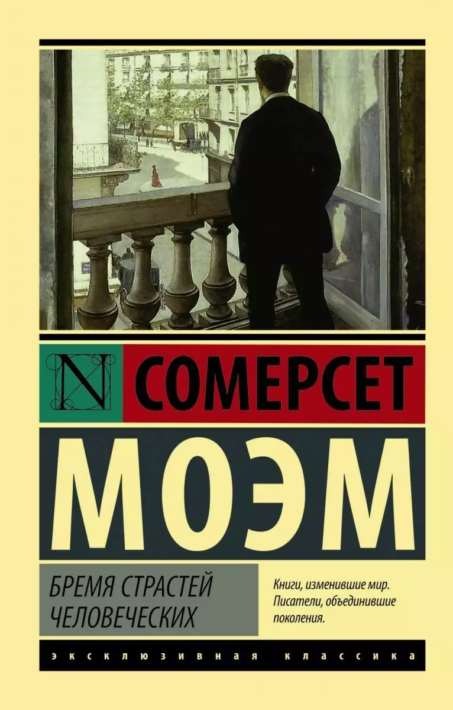
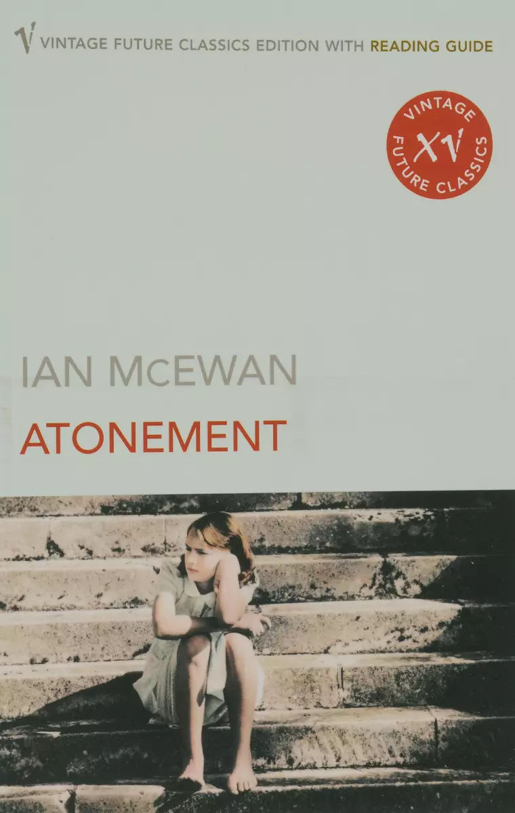
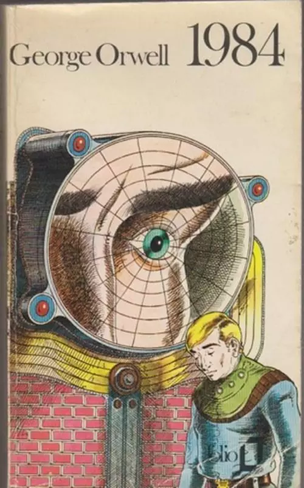
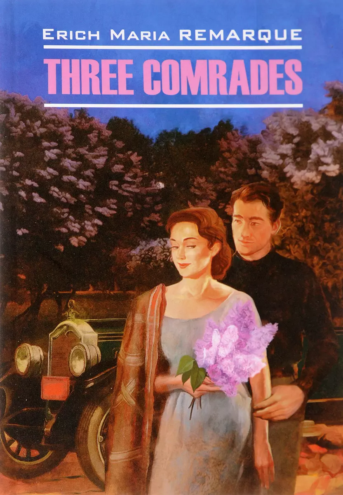
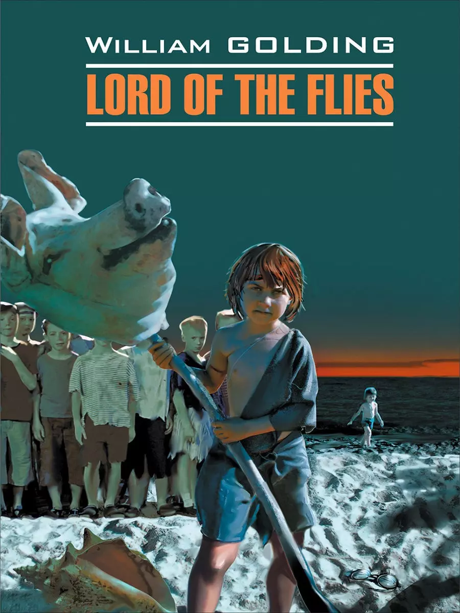

Favourite books
Most of these books are novels. I absolutely love fiction and imaginative literature! There are science fiction, dystopia, philosophical novel and psychological fiction among them. I've read all of these books before I turned 18, so I can say that this literature brought me up.





"The world belongs to those who read."
Rick Holland. English poet